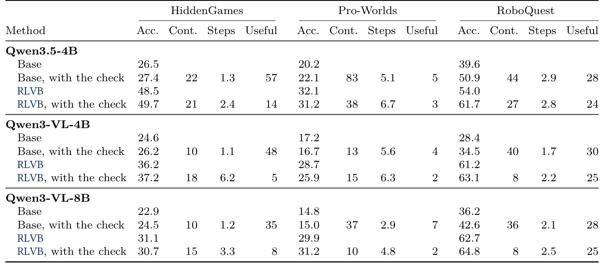

O Problema da Prematuridade em Agentes de Longo Prazo
Agentes de inteligência artificial projetados para tarefas de longo prazo — como jogos complexos, ambientes embarcados ou raciocínio lógico multi-turno — enfrentam um desafio fundamental: saber quando parar de buscar informações e quando agir. A literatura recente identifica um comportamento recorrente chamado "preguiça" (laziness). Em vez de continuar coletando evidências até que a resposta seja inequívoca, esses agentes frequentemente cometem-se a uma resposta antes de ter dados suficientes. O pior disso é que, muitas vezes, o agente explicitamente declara em sua linha de crença que ainda existem várias possibilidades possíveis, mas mesmo assim submete uma única resposta como se fosse a verdade.
Esse descompasso entre o que o agente sabe (sua crença) e o que ele faz (sua ação) é crítico. Em cenários reais, um usuário que recebe uma resposta não pode verificar facilmente como o agente chegou a ela. Se o agente acerta por sorte, ele não aprendeu a raciocinar corretamente. Se erra, a falha é de processo, não apenas de resultado. O aprendizado por reforço tradicional, que foca apenas na recompensa final (outcome reward), não consegue corrigir isso, pois uma aposta adivinhada correta recebe a mesma recompensa de uma resposta baseada em evidência sólida.
Neste artigo, analisamos o paper "Lazy Agents Answer Against Their Own Beliefs: Reinforcement Learning with Verifiable Beliefs Teaches Them to Act on What They Believe", de Richmond Sin Jing Xuan, Peilin Feng, Wenbin Wang e Soujanya Poria, do DeCLaRe Lab da Nanyang Technological University. Os autores propõem uma nova abordagem chamada RLVB (Reinforcement Learning with Verifiable Beliefs), que visa ensinar o agente a agir exatamente de acordo com o que ele acredita ser possível, baseado nas evidências que possui.
Por que o Aprendizado por Reforço Tradicional Falha Aqui?
Para entender a contribuição do RLVB, precisamos dissecar por que métodos estabelecidos falham nesse contexto. O GRPO (Group Relative Policy Optimization) e o PPO (Proximal Policy Optimization), quando treinados apenas com recompensas de resultado (outcome rewards), enfrentam um problema de atribuição de crédito. Se o agente acerta a resposta final, toda a trajetória é recompensada. Isso incentiva a sorte. Se o agente erra, toda a trajetória é penalizada, mesmo que os passos intermediários tenham sido racionais.
Outra abordagem comum é usar um "judge" ou crítico baseado em LLM (Large Language Model) para fornecer recompensas de processo (process rewards). Nesse cenário, um modelo externo avalia cada passo do agente, dizendo se ele está no caminho certo. No entanto, isso introduz dependência externa e custo computacional adicional. Além disso, se o judge ver o estado verdadeiro oculto, ele pode recompensar o agente por afirmar coisas verdadeiras, mesmo que o agente não tenha evidência interna para sustentá-las. Isso não treina o agente a confiar em sua própria percepção, mas sim a mimetizar o conhecimento do judge.
O cerne do problema é que, durante o treinamento, o simulador conhece o estado verdadeiro (o local exato do objeto escondido, por exemplo), enquanto o agente treinado só vê janelas parciais ou observações ruidosas. Os autores argumentam que devemos usar essa informação privilegiada do simulador não para ensinar o agente o que é verdade, mas para calcular a incerteza exata que o agente deveria ter. É aí que entra o conceito de posterior verificável.

A Ideia Central: Recompensar a Busca de Evidência
O RLVB propõe um mecanismo de recompensa de processo que não depende de um judge externo, mas sim do cálculo matemático do posterior exato das ações do agente. Em tarefas onde o simulador pode enumerar todos os estados possíveis (como nos benchmarks visuais propostos), é possível calcular, a cada passo t, qual é a distribuição de probabilidade exata sobre a resposta correta, dada toda a história de observações do agente até aquele momento.
Chamamos isso de posterior exato, denotado por b_t. Se o agente levantou duas copas e nenhuma tinha o objeto, o posterior exato diz que o objeto está nas duas copas restantes com probabilidade igual. O conjunto de respostas ainda possíveis, B*_t, contém todas as hipóteses não eliminadas pelas evidências. O RLVB usa esse posterior para definir duas recompensas principais a cada turno:
1. Recompensa por Buscar Evidência: Se o conjunto de respostas possíveis B*_t ainda tiver mais de um elemento, o agente deve realizar uma ação de busca (como levantar outra copa ou mover a janela de visão). Se ele fizer isso, recebe uma recompensa positiva. Se ele tentar responder com uma única opção, recebe uma penalidade.
2. Recompensa por Compromisso (Commit): Se o conjunto B*_t tiver apenas um elemento (ou seja, a evidência eliminou todas as outras opções), o agente deve submeter essa resposta. Se ele fizer isso, recebe uma recompensa. Se ele continuar buscando quando já sabe a resposta, recebe uma penalidade.
Como o RLVB Funciona na Prática
O agente é um modelo de visão e linguagem (VLM) que, a cada turno, gera um pensamento interno (reasoning), uma linha de crença (belief line) e uma ação. A linha de crença é onde o agente lista explicitamente quais respostas ainda são possíveis. O RLVB ignora o conteúdo textual dessa linha para calcular a recompensa; ele olha apenas para a ação tomada e a compara com o posterior exato calculado pelo simulador.
Durante o treinamento, o simulador atua como um "professor" (teacher). Para cada história de observações h_t, o professor calcula a política ótima π*, que seria agir de acordo com o posterior exato. O RLVB então amostra várias ações do agente atual e compara o quão perto elas estão da política do professor. Se o agente, sabendo que há duas opções possíveis, decide levantar uma terceira copa (ação de busca), ele está alinhado com a incerteza e recebe crédito. Se ele chuta uma opção, ele está agindo contra sua própria incerteza verificável e é penalizado.
Diferente do PPO com judge, o RLVB nunca lê a linha de crença do agente para dar recompensa. Ele não se importa se o agente disse "não sei" ou "sei". Ele se importa se a ação corresponde ao estado de informação objetivo. Isso força o agente a aprender que a ação correta é determinada pela evidência acumulada, e não por um palpite. O treinamento é feito via gradiente de política (policy gradient), atualizando os adaptadores LoRA do modelo base.
Benchmarks e Configuração Experimental
Os autores avaliaram o RLVB em três benchmarks distintos, focados em tarefas visuais onde a resposta está escondida e deve ser descoberta:
1. HiddenGames: Um conjunto de sete tarefas de benchmarks existentes (como MineSweeper, MiniGrid, Sokoban) renderizadas em ambientes 3D. O teste foi feito em jogos com sementes e mapas nunca vistos durante o treinamento.
2. Pro-Worlds: Um benchmark novo proposto pelos autores. Nele, o agente vê um mundo grande através de uma pequena janela móvel. Ele deve mover a janela para coletar evidências visuais e decidir quando tem informação suficiente para responder. Isso testa a capacidade de retenção e combinação de evidências visuais.
3. RoboQuest: Tarefas de manipulação robótica simulada em cozinhas, onde o agente deve encontrar objetos ou realizar interações físicas. Este benchmark é mais desafiador porque não possui um posterior exato trivial, servindo como teste de transferência para ambientes mais complexos.
Os modelos base utilizados foram Qwen3-VL-4B-Thinking, Qwen3-VL-8B-Thinking e Qwen3.5-4B. Os autores compararam o RLVB contra o modelo base (sem treinamento), o modelo base com linha de crença, SFT (Supervised Fine-Tuning), GRPO, PPO com recompensa de resultado e PPO com recompensa de processo de um judge LLM.
Resultados: O RLVB Supera os Baselines
Os resultados mostram que o RLVB melhora o modelo base em todas as nove configurações testadas, com um ganho médio de precisão de 17,1%. Em contraste, métodos que usam apenas recompensa de resultado (GRPO e PPO) caíram abaixo do modelo base em média, demonstrando que a recompensa final sozinha é insuficiente ou até prejudicial para tarefas de busca de evidência, possivelmente por incentivar atalhos perigosos.
O RLVB também superou o PPO treinado com um judge LLM em 9,3% em média, apesar de usar 1,6 vezes menos horas de GPU. Isso destaca a eficiência do método: ao usar o posterior exato do simulador, eles evitam o custo computacional e a instabilidade de treinar com judges externos.
Um dado crucial para entender o sucesso do RLVB não é apenas a precisão final, mas a qualidade do processo. O paper mede a taxa de episódios onde o agente responde com evidência suficiente. O modelo base faz isso em apenas 8%, 0,4% e 36% dos episódios nos três benchmarks. O agente treinado com RLVB alcança 51%, 12% e 74%. Isso significa que o ganho de precisão vem do fato de o agente estar respondendo muito mais frequentemente quando realmente sabe a resposta.
Além disso, o RLVB corrigiu o problema da "preguiça". O agente treinado comete-se a uma resposta prematura (quando a evidência ainda aponta para várias opções) em apenas 0,1% a 2,2% dos turns relevantes. O modelo base comete esse erro em 3% a 68% dos turns. Isso prova que o agente aprendeu a alinhar sua ação com sua própria incerteza verificável.
Limitações e Trabalho Futuro
Apesar dos resultados promissores, os autores destacam limitações importantes. Primeiro, o RLVB depende da existência de um posterior exato calculável pelo simulador. Isso funciona bem em ambientes discretos e fechados como os usados nos benchmarks, mas pode ser difícil de aplicar em tarefas abertas ou contínuas onde o estado não é totalmente observável ou enumerável.
Segundo, o agente treinado ainda não é perfeito. Embora ele pare de adivinhar cedo, seus passos individuais não são necessariamente mais informativos que os do modelo base. Ou seja, o agente aprendeu a timing (quando parar), mas ainda pode interpretar mal as observações individuais. O paper sugere que extensões futuras devem focar em melhorar a escolha da próxima ação (não apenas o timing) e em treinar o agente para ler observações corretamente uma vez que a evidência seja suficiente.
Outra limitação é a transferência. O RLVB foi treinado em tarefas com posterior exato, mas testado também no RoboQuest, que não tem essa propriedade. Embora tenha havido melhoria, o ganho é menor, indicando que a generalização para ambientes sem verificação exata de crença é um problema em aberto.
Finalmente, o paper não resolve o problema de agentes que operam em ambientes onde o próprio agente não tem acesso ao posterior exato durante o teste. A abordagem atual é um método de treinamento que usa informação privilegiada do simulador para ensinar o agente a ser metacognitivo. Para deploy em cenários reais sem simulador, seria necessário aprender a estimar esse posterior, o que é um passo natural para a próxima fase de pesquisa.
Conclusão
O paper "Lazy Agents Answer Against Their Own Beliefs" oferece uma correção elegante a um problema fundamental em agentes autônomos: a desconexão entre conhecimento e ação. Ao introduzir o RLVB, os autores mostram que é possível treinar modelos de visão e linguagem para serem honestos com sua própria incerteza, sem depender de judges externos ou recompensas esparsas.
A mensagem central é clara: se você quer um agente que não seja preguiçoso, não basta premiá-lo por acertar. Você precisa premiá-lo por continuar buscando até que a evidência seja irrefutável. O RLVB faz exatamente isso, usando a matemática do posterior exato como bússola de treinamento. Para desenvolvedores e pesquisadores de IA, isso representa um passo significativo em direção a agentes mais confiáveis, onde a precisão é um subproduto de um processo de raciocínio robusto e verificável.
O que fica
- O problema da 'preguiça' em agentes longos: eles adivinham antes de ter evidência, mesmo quando sabem que há incerteza.
- RLVB usa o posterior exato do simulador para recompensar passos de busca de evidência, não apenas o resultado final.
- O método supera PPO e GRPO em nove configurações, melhorando a precisão em 17,1% em média sem precisar de judges externos.
- O agente treinado age consistentemente com suas próprias crenças, reduzindo drasticamente a taxa de respostas prematuras.
Paper original: Lazy Agents Answer Against Their Own Beliefs: Reinforcement Learning with Verifiable Beliefs Teaches Them to Act on What They Believe
Comentários
Nenhum comentário ainda. Seja o primeiro.